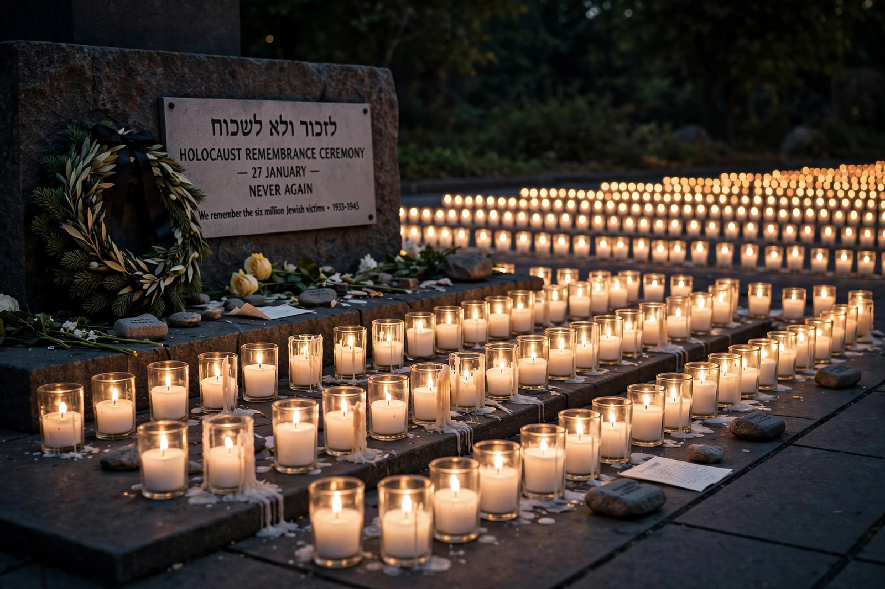

International Holocaust Remembrance Day
| International Holocaust Remembrance Day | |
|---|---|
 | |
| Date | January 27 |
| Established | November 1, 2005 (UN General Assembly Resolution 60/7) |
| Significance | Anniversary of the liberation of Auschwitz-Birkenau (January 27, 1945) |
International Holocaust Remembrance Day is an international day of commemoration on January 27 honouring the victims of the Holocaust — the genocide in which Nazi Germany and its collaborators murdered approximately six million Jews, along with millions of Roma, Poles, Soviet prisoners of war, people with disabilities, and others. The date marks the anniversary of the liberation of the Auschwitz-Birkenau concentration and extermination camp by the Red Army on January 27, 1945.
Establishment
The United Nations General Assembly designated the day in Resolution 60/7, adopted on November 1, 2005, following a special session marking the 60th anniversary of the liberation of the Nazi camps. The resolution rejects Holocaust denial, condemns ethnic and religious intolerance, and urges member states to develop educational programs about the Holocaust. Several countries had already adopted January 27 as a national day of remembrance, including Germany (since 1996) and the United Kingdom.
Observance
Commemorations are held each year at the UN headquarters in New York and Geneva, at the United States Holocaust Memorial Museum in Washington, at Yad Vashem in Jerusalem, and at memorial sites across Europe, including Auschwitz-Birkenau, Majdanek, and the former camps at Treblinka and Sobibór. Typical observances feature survivor testimony, candle-lighting ceremonies, moments of silence, and educational events aimed at preventing future genocides. Israel separately observes Yom HaShoah, its national Holocaust remembrance day, in the spring.